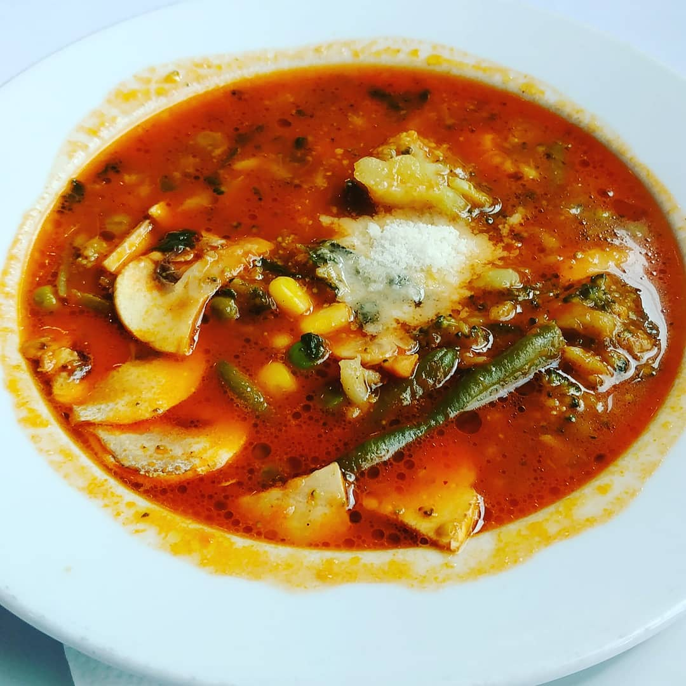

Talianska polievka podľa @in_medio — Normy Jedál
Skvelá talianska polievka . . . . . . . . . . . . #minestrone #polievka #soup #italiansoup #talianskapolievka #inmedio #dobrejedlo #in_medio #dnesjem #mojejedlo #jedlo #food #myfood #zeleninovapolievka